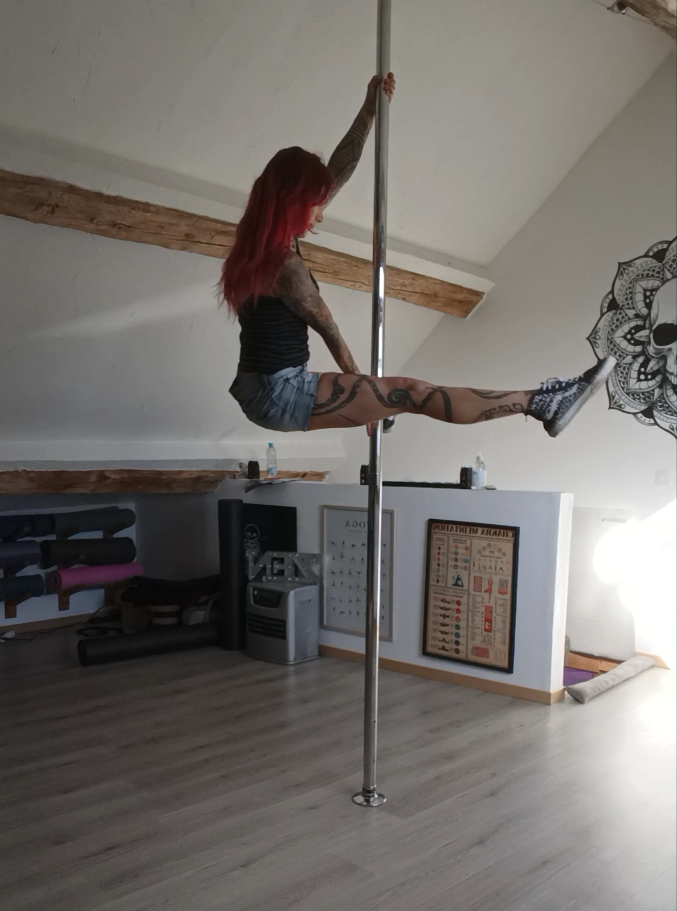
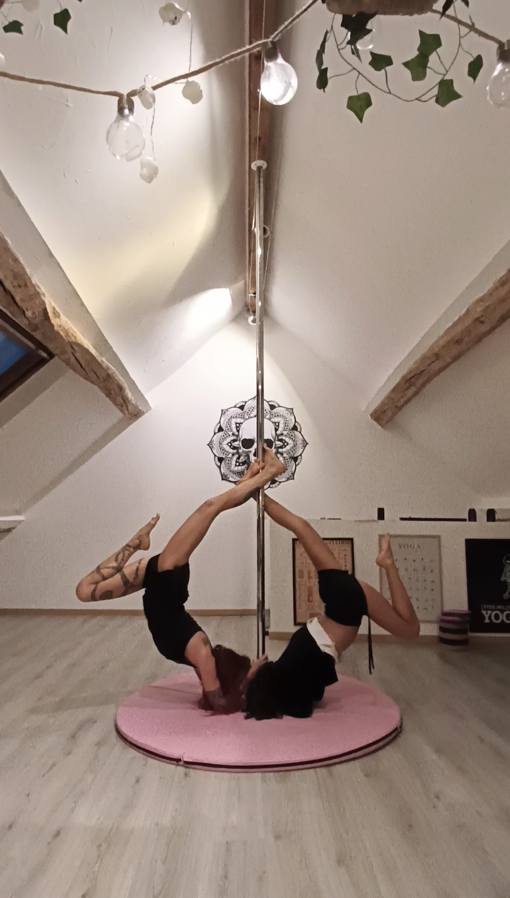

Coaching individuel
Une séance centrée sur vous, vos questions et vos objectifs. Idéal pour prendre le temps de revoir les bases, améliorer un placement, travailler une transition ou approfondir un mouvement.
Un accompagnement personnalisé
Envie de travailler une figure, de consolider vos bases ou de prendre confiance sur la barre ? Le coaching permet de bénéficier d'un accompagnement adapté à vos besoins.
Chez Yog'n Moov, chacun et chacune peut trouver sa place. Les coachings sont ouverts aux femmes comme aux hommes, quel que soit leur parcours, dans la limite des possibilités et des conditions de sécurité.
Découvrir le coaching Me contacter
Les possibilités
Chaque personne arrive avec ses propres attentes. Le coaching permet de prendre le temps d'identifier ce que vous souhaitez travailler, puis de choisir des exercices et des objectifs adaptés à votre expérience et à vos capacités du moment.
Une séance centrée sur vous, vos questions et vos objectifs. Idéal pour prendre le temps de revoir les bases, améliorer un placement, travailler une transition ou approfondir un mouvement.
Vous souhaitez être accompagné avec une amie, un partenaire ou un proche ? Le coaching en duo permet de partager la séance tout en bénéficiant de conseils personnalisés.
Vous avez une figure ou un enchaînement en tête ? Nous pouvons consacrer la séance à vos bases techniques, à la compréhension du mouvement et aux étapes nécessaires pour progresser de façon adaptée.
Vous souhaitez vous sentir plus à l'aise, mieux comprendre vos appuis ou apprivoiser certaines appréhensions ? Le travail se fait progressivement, sans pression de performance ni comparaison avec les autres.
Vous disposez d'une barre chez vous ? Des séances à domicile peuvent être envisagées selon votre localisation, votre installation et les possibilités de déplacement.
À distance
Vous pratiquez chez vous et souhaitez bénéficier de conseils sans vous déplacer ? La visio permet d'échanger sur vos objectifs et de travailler certains éléments techniques depuis votre espace d'entraînement.
Une barre correctement installée, un espace dégagé et un cadrage adapté sont indispensables. Les exercices doivent être choisis en fonction des conditions de sécurité : toutes les figures ne conviennent pas à un accompagnement à distance.
Demander des informationsLa pratique en images
Chaque séance est une occasion de mieux comprendre le mouvement et de construire sa progression, sans avoir besoin de se comparer aux autres.


Comment se déroule le coaching ?
Le premier contact permet de parler de votre expérience, de ce que vous aimeriez travailler et du format qui vous conviendrait le mieux. Il n'est pas nécessaire d'avoir déjà un objectif très précis : nous pouvons en discuter ensemble.
Parlons de votre projet
Contactez-moi pour m'expliquer ce que vous aimeriez travailler. Je vous répondrai pour discuter des possibilités et des disponibilités.
Appeler le 06 32 51 49 50 Envoyer un e-mail Écrire sur WhatsApp